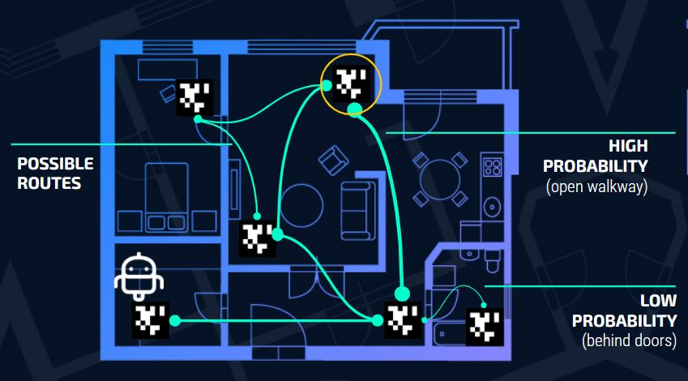

Probabilistic Shortest Paths
In conventional shortest path problems on deterministic weighted graphs, popular shortest path algorithms such as Dijkstra’s or Bellman-Ford work well for finding the optimal path between two nodes. However, these approaches don’t transfer well to stochastic graphs where there is a probability associated with each edge that dictates how likely it is that the edge can be traversed. Our project focuses on the problem of stochastic graph traversal (and how they could be applied to landmark-based navigation in mobile robots) and discusses methods of finding shortest paths within a graph where certain edges may not always be present.
This stochastic graph on the left shows which nodes are connected and the probabilities of how likely the robot would move through the different paths from one node to another. We then transformed this visual representation into matrices.
Using the example from above, we can represent the “layout” of this graph with an adjacency matrix where the rows and columns represent the different nodes (A, B, C, and D) and a zero or a one will indicate if the nodes are connected to each other:
Then, we generated the probability transition matrix needed to compute the optimal policy. Using the same logic as above, we can represent the probabilities like so
This matrix tells us the current node (row) and the node the robot is going to (column) as well as the probability that it will be able to traverse that edge. By knowing the probabilities and formatting them in a matrix format, we were able to use this information to find the optimal policy (or rules in which the robot will follow to select which paths).
We explored Value Iteration and Policy Iteration to solve the shortest path problem in stochastic graphs. Value Iteration finds the policy through an optimal value function. Whereas, Policy Iteration manipulates the policy itself. In comparison to Value Iteration, Policy Iteration has a larger time complexity, but will converge quicker which is what makes Policy Iteration competitive and relevant.
Both Value Iteration and Policy Iteration use a recursive method. However, they use different methods to achieve their results.
Value Iteration will try to improve the gained utility from a base case until convergence. When the utility before improvement is sufficiently close to the utility post improvement, this implies that utility is sufficiently close to the true optimal value, and thus, found an optimal policy.
In comparison, Policy Iteration will try to improve the policy from a random base case until convergence. This implies that it will converge when the policy before it has been improved and is deemed close to the policy post its improvement (which means that it’s close to the true optimal policy).
The paper written by me and my partners can be read here
The code can be found on Github